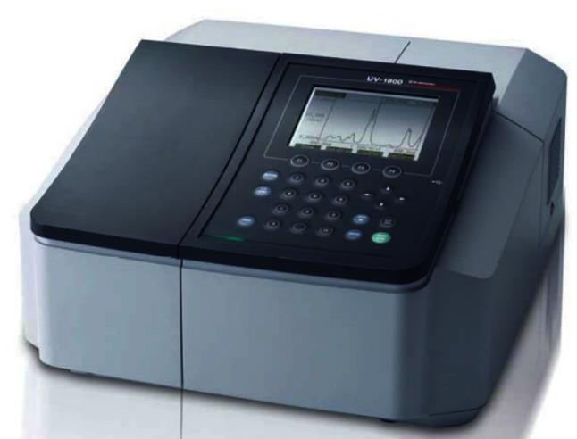
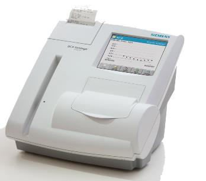
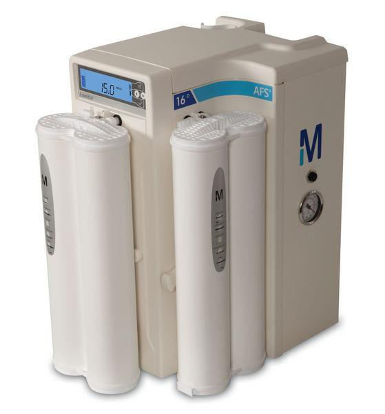

Technologies de biochimie clinique
La lumière et la matière
La lumière est une onde : \( \nu = 1/T = C/\lambda \), avec \( C \approx 3 \times 10^8 \) m/s. Visible : 400 à 700 nm ; UV en dessous, IR au-dessus. Une molécule absorbe certaines longueurs d'onde : son spectre d'absorption est une signature.
La lumière incidente peut être réfléchie, transmise, diffusée, absorbée, ou réémise en fluorescence.
La loi de Beer-Lambert
\[ T = \frac{I_t}{I_0} \qquad A = \log_{10}\frac{1}{T} = \log_{10}\frac{I_0}{I_t} = \varepsilon \times l \times c \]\( \varepsilon \) : coefficient d'absorption molaire (L·mol⁻¹·cm⁻¹), \( l \) : trajet optique (cm), \( c \) : concentration (mol/L). Valide en lumière monochromatique et en solution diluée.
- Point final : lecture à l'équilibre (glucose, protéines, cholestérol) ; à deux points, on élimine la couleur propre de l'échantillon.
- Cinétique : vitesse de variation de l'absorbance (enzymes : ALT, AST, LDH).
Avec un étalon dans les mêmes conditions : \( c = c_{\text{étalon}} \times A / A_{\text{étalon}} \).
Le spectrophotomètre


- Lampe au tungstène : visible (350 à 800 nm). Lampe au deutérium : UV (190 à 400 nm). Xénon possible.
- Cuve en quartz obligatoire sous 310 nm ; plastique ou verre dans le visible ; pas de plastique avec les solvants organiques.
- Détecteurs : photodiode, barrette de diodes (tout le spectre d'un coup), photomultiplicateur (jusqu'à 10⁶ électrons par électron arraché).
- Simple faisceau ou double faisceau (référence et essai en alternance sur le même détecteur).
Installation : table stable, loin des centrifugeuses. Entretien : environnement une fois par an (prise à moins de 1,5 m, tension à ± 5 %), inspection visuelle tous les six mois, cuves en quartz lavées NaOH 0,1 M puis HCl 0,1 M. Étalonner à chaque nouvelle série.
Turbidimétrie et néphélométrie
Pour les protéines qui ne colorent pas (CRP, immunoglobulines, complément, transferrine…) : leurs complexes antigène-anticorps troublent la solution.
- Turbidimétrie : on mesure la lumière transmise, qui diminue (340 nm ou 435 à 480 nm).
- Néphélométrie : on mesure la lumière diffusée, à un angle.
Effet crochet : un excès d'antigène fait paradoxalement baisser le signal. D'où une calibration multipoint et une régression non linéaire.
Potentiométrie et électrolytes
Une électrode sélective (ISE) donne une tension qui suit le logarithme de l'activité de l'ion (Nernst) :
\[ E = E^0 + \frac{RT}{nF} \ln(\gamma C) \]Environ 59 mV par décade à 25 °C pour un ion de charge 1. Électrodes : Na⁺ (verre), K⁺ (valinomycine), Cl⁻ (échangeuse d'ions), référence Ag/AgCl.
- Na⁺ : principal cation extracellulaire (osmolarité, équilibre hydrique).
- K⁺ : principal cation intracellulaire (cœur, muscles).
- Cl⁻ : principal anion extracellulaire. Li⁺ : suivi des troubles bipolaires.
- Dans l'urine : Na⁺, K⁺, Cl⁻ seulement. Calibration en deux points (Standard A et B).
Valeurs : Na⁺ 135 à 148, K⁺ 3,5 à 5,3, Cl⁻ 98 à 107, Li⁺ 0,30 à 1,20 mmol/L.
Les automates de biochimie
- Chimie sèche : réflectance sur bandelette, LED, sphère d'Ulbricht (ex. VITROS).
- Chimie liquide : absorbance, Beer-Lambert, 304 à 670 nm (ex. Architect).

- Accès aléatoire : tests choisis à la demande (séries, urgences, profils).
- Pipetage par seringues : échantillon 2 à 99 µL, réactif 3 à 500 µL, CV < 1 % ; aiguille rincée après chaque usage.
- Incubation à 37 °C ; détection par lampe halogène ou LED, filtres interférentiels ou réseau, plus de 8 longueurs d'onde (340 à 620 nm).
Installation : loin du soleil et de la chaleur, prise à la terre, stabilisateur de tension. En chimie liquide, la mesure à blanc d'abord. Entretien chaque jour (éclaboussures, extinction) et tous les six mois (inspection, lampe).
La calibration
La calibration relie le signal à une concentration connue : multipoint (au moins 3 niveaux), calibrateurs traçables, courbe linéaire ou non. L'ajustement ramène l'appareil à ses performances. L'ISO 9001 exige une calibration traçable. On ne lit pas un patient au-delà du dernier calibrateur.
Contrôle de qualité : CQI chaque jour (cartes de Levey-Jennings), EEQ entre laboratoires, intervalle de calibration fixé par calendrier, par cartes de contrôle ou en cours d'utilisation. L'automate surveille le blanc réactif, la linéarité et la consommation du substrat ; hors linéarité, il dilue et refait le dosage.
L'eau du laboratoire
Eau du laboratoire : sans pyrogènes, solides ≤ 1 ppm, pH 5,4 à 7,2, résistivité ≥ 3 × 10⁵ Ω·cm à 25 °C.


Distillateur : bouilleur à résistances (100 °C) → vapeur → condenseur refroidi → récipient en plastique. Bouilleur chaque mois (tartre), condenseur chaque année, récipient à l'eau de Javel de temps à autre.
| Technologie | Retire | Ne retire pas |
|---|---|---|
| Filtration | particules (membranes 0,2 µm) | organiques, ions, gaz, pyrogènes |
| Ultrafiltration | pyrogènes, nucléases, micro-organismes | ions, gaz, organiques |
| Osmose inverse | jusqu'à 99 % (bactéries, 90 à 95 % des ions) | gaz dissous ; débit faible |
| Déionisation, EDI | ions ; seule à atteindre 18 MΩ·cm | organiques, particules, bactéries |
| Charbon actif | organiques, chlore | ions, particules |
| UV | traces organiques, micro-organismes | ions, particules |
\( \rho\,(\text{M}\Omega\cdot\text{cm}) = 1/\sigma\,(\mu\text{S/cm}) \). Maximum théorique : 18,2 MΩ·cm à 25 °C. COT : alimentation 2 à 5 ppm, ultrapure 1 à 5 ppb.
Questions d'examen
Réponds dans ta tête, puis touche « Voir la réponse ».
1. Énonce la loi de Beer-Lambert et ses conditions de validité.
Voir la réponse
\( A = \varepsilon \times l \times c \)
Lumière monochromatique et solution diluée.
2. Une solution transmet 25 % de la lumière. Quelle est son absorbance ?
Voir la réponse
\( A = \log_{10}(1/T) \)
\( A = \log_{10}(1/0{,}25) \)
\( A \approx 0{,}60 \)
3. Un étalon à 5 mmol/L donne A = 0,25 ; un patient donne A = 0,40. Quelle concentration ?
Voir la réponse
\( c = c_{\text{étalon}} \times A / A_{\text{étalon}} \)
\( c = 5 \times 0{,}40 / 0{,}25 \)
\( c = 8 \) mmol/L
4. On lit à 260 nm. Quelle lampe et quelle cuve ?
Voir la réponse
Lampe au deutérium (UV).
Cuve en quartz, obligatoire sous 310 nm.
5. Différence entre turbidimétrie et néphélométrie ?
Voir la réponse
Turbidimétrie : lumière transmise, qui diminue.
Néphélométrie : lumière diffusée, mesurée à un angle.
6. Qu'est-ce que l'effet crochet ?
Voir la réponse
Un excès d'antigène fait paradoxalement diminuer le signal.
D'où une calibration multipoint et une régression non linéaire.
7. Quelle électrode pour le potassium ? Combien de mV par décade à 25 °C pour un ion de charge 1 ?
Voir la réponse
Électrode à membrane de valinomycine.
Environ 59 mV par décade.
8. Cite les unités d'un automate de chimie clinique dans l'ordre du trajet.
Voir la réponse
Carrousel d'échantillons (ASP), pompes SPP et RPP avec carrousel de réactifs réfrigéré (RCU), carrousel de réaction à 37 °C avec agitation (MIX), photomètre, unité de lavage (WU).
9. Quel est le principal cation extracellulaire ? Intracellulaire ? Comment se calibre un analyseur d'électrolytes ?
Voir la réponse
Extracellulaire : Na⁺.
Intracellulaire : K⁺.
Calibration en deux points, avec les solutions Standard A et Standard B.
10. Quelle technologie seule atteint la résistivité de l'eau de type 1 ? Que laisse passer l'osmose inverse ?
Voir la réponse
La déionisation (plus de 18 MΩ·cm).
L'osmose inverse laisse passer les gaz dissous.